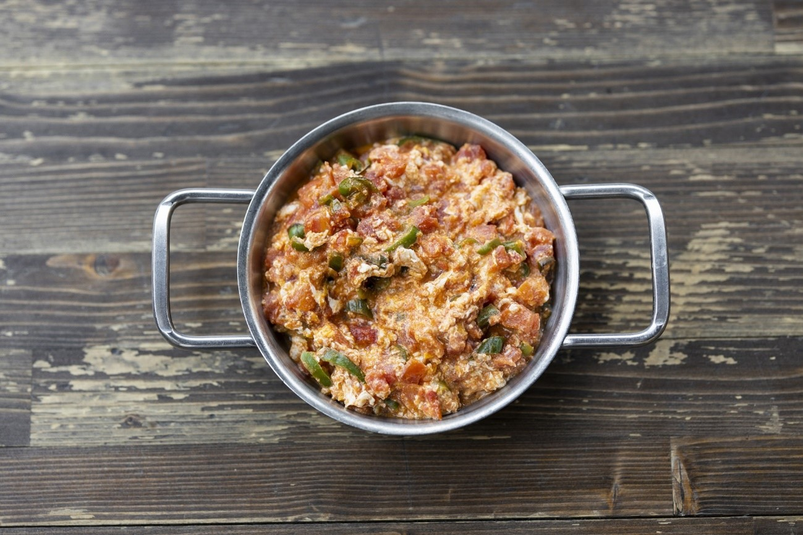
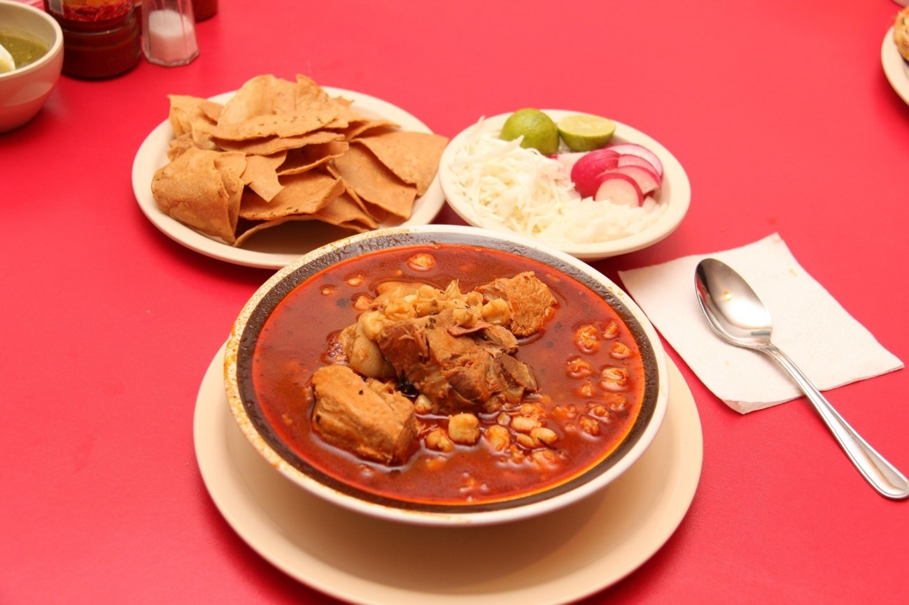
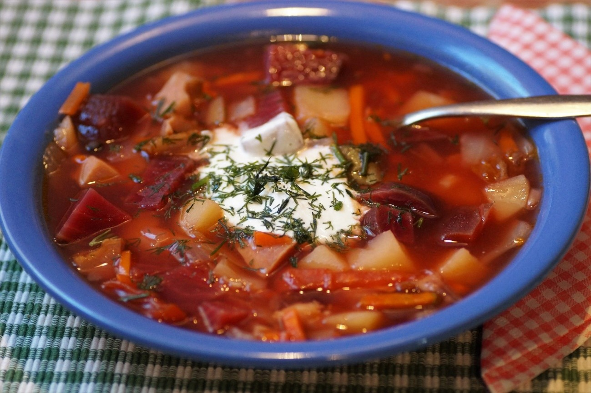
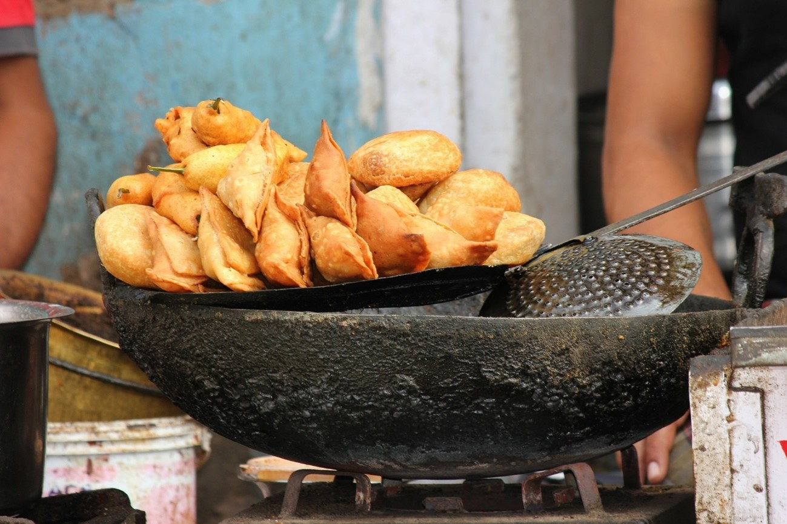
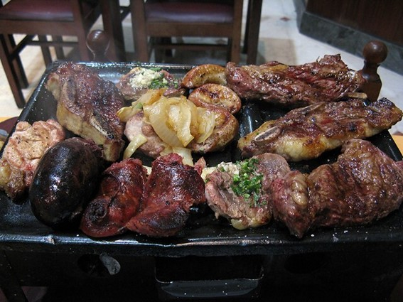
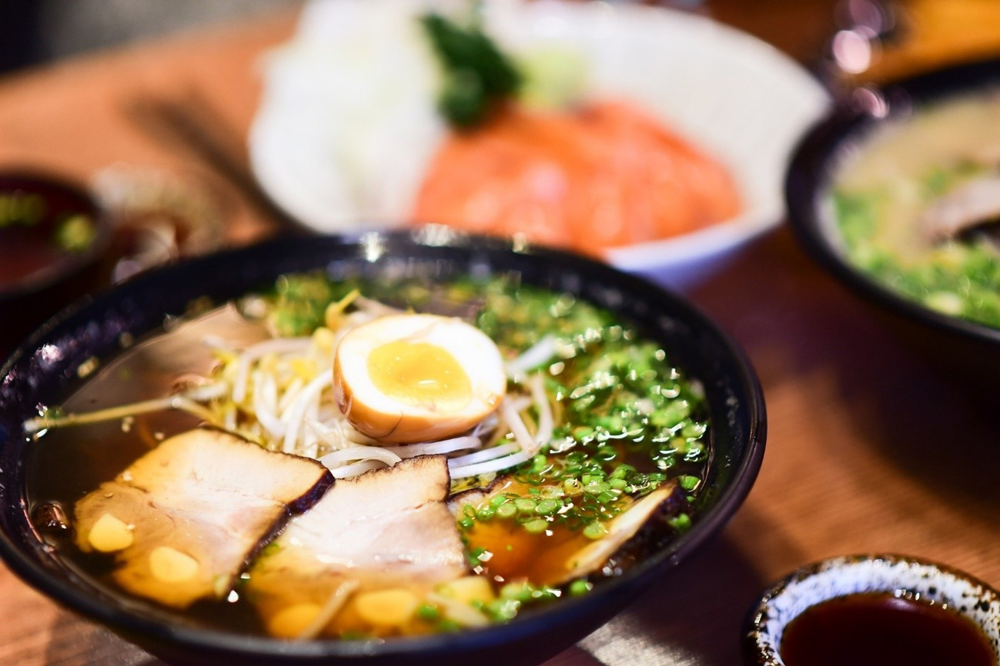

A comida típica é talvez a parte mais interessante de uma viagem internacional. É por meio dela que podemos sentir mais sobre a cultura local, bem como viver parte dos costumes, crenças e hábitos adotados pelos nativos. Pensando nisso preparamos um guia especial com algumas dicas de comidas que você precisa experimentar a versão original quando estiver no país. Confira!
Pad Thai (Tailândia)
Não há nada mais típico na deliciosa comida tailandesa do que um bom Pad Thai servido com camarão e outros frutos do mar. O prato nacional preferido por 10 em cada 10 turistas tem suas origens há mais de 250 anos, com ingredientes e modo de preparo emprestados dos imigrantes chineses. Embora já tenha existido até mesmo uma receita oficial criada pelo governo da Tailândia, a refeição à base de noodles fritos costuma variar, com diferentes proporções de molho de peixe e tamarindo, brotos de feijão, ovo e tofu, dando diferentes nuances a um prato que pode ser encontrado à venda em cada esquina — mas nunca um igual ao outro.
Menemen (Turquia)

O Menemen é um tradicional prato da Turquia que é comumente consumido no café da manhã, servido com pão. Ele inclui ovos, tomate, pimentão e especiarias, tais como pimenta preta e pimenta vermelha cozidas em azeite ou óleo de girassol. Costuma complementar queijo turco feta e produtos de charcutaria, como sucuk e pastirma, uma carne do país.
Spaghetti alla carbonara (Itália)
O spaghetti alla carbonara é uma receita tradicional de massa italiana, sendo que o nome é derivado da palavra “carbone”, que significa carvão. A receita é da capital Roma, e é preparada com ovos, queijo parmesão, queijo pecorino romano, toucinho, pimenta preta (pra mim a melhor parte!), azeite ou manteiga. O prato fica assim: os queijos e os ovos aderem aos fios da massa, ficando tudo meio grudado como se fosse uma capa, e os pedaços de toucinho misturados.
Ratatouille (França)
O ratatouille é uma receita francesa clássica em que os ingredientes principais são berinjela e tomate. O nome deriva das palavras francesas “rata” e “touiller” que significam “ensopado robusto” e “mexer”, respectivamente. Portanto, um ratatouille é um ensopado de berinjela e tomate, com base de alho, cebola, abobrinha, pimentão, manjerona, e outras ervas verdes. O prato e o termo ficaram mais famosos em 2007, quando a Disney Pixar lançou o filme Ratatouille, que conta a história de um ratinho francês que gosta de cozinhar.
Bacalhau (Portugal)
Ora, pois. Visitar Portugal e não experimentar um tradicional bacalhau é arrependimento na certa. O peixe faz parte da gastronomia portuguesa desde o século XIV, sendo herdado pela culinária brasileira antes mesmo da vinda da família real portuguesa. Geralmente o bacalhau vai acompanhado de batatas ou arroz, com tomates, ovos e azeitonas. Entre as opções conhecidas, está o Bacalhau à Brás, em que todo o peixe é desfiado.
Pozole (México)

O pozole é tradicional da culinária do México e trata-se de uma espécie de sopa feita de milho, com carne de porco ou frango e diversos vegetais e outros ingredientes, como cebola, alface, queijo ou malagueta em pó. É servido popularmente em diversos estados mexicanos e é muito consumido no sudoeste dos Estados Unidos.
Borscht (Rússia e Ucrânia)

O borsch é uma sopa muito consumida na Rússia e na Ucrânia, porém também encontrada em outros países do Leste Europeu como a Polônia e a Romênia. A base de seu preparo é a beterraba, que dá uma forte coloração vermelha ao prato. Repolho, cenoura, pepino, batata, cebola, tomate, cogumelo e carnes estão entre os itens que compõem o ensopado.
Chamuça (Índia)

A chamuça, também conhecida como samosa, é uma especialidade da Índia bem parecida com um pastelzinho servido muitas vezes como um aperitivo. Ele é triangular e recheado com uma mistura condimentada de feijão, batata, carne picada e ervas aromáticas. Também pode ser encontrado em versões vegetarianas em algumas regiões da Índia.
Fish and Chips (Reino Unido)
O fish and chips (peixe e fritas) é um prato típico do Reino Unido. Barato e de preparo geralmente rápido, é um peixe frito que vai envolvido num polme com batatas fritas. Antigamente era vendido embrulhado em folhas de jornal, como ainda acontece em algumas regiões. Acabou se tornando muito consumido também no Canadá e África do Sul.
Paella (Espanha)
A paella é um prato à base de arroz, bem típico da gastronomia de Valência, na Espanha, porém popularizado em todo o país. Trata-se de um guisado de arroz, carne e verduras, preparado numa paella (panela) sobre fogo. No Brasil costuma ser preparado com frutos do mar. Vale a pena experimentar a versão original se estiver passeando por Valência.
Hambúrguer (Estados Unidos)
Para fechar a nossa lista, claro que não podemos deixar de falar de algo tão popular e amigo para todas as horas: o hambúrguer! Na verdade, o tradicional sanduíche de carne chegou aos Estados Unidos por meio de imigrantes alemães, que tornaram o país estadunidense o lugar mais famoso do mundo quando o assunto é hambúrguer.
Wurst (Alemanha)
Nem só de salsicha vive a culinária alemã, mas seria uma grande injustiça não dizer que é uma das comidas mais representativas do país. Se você nunca foi para a Alemanha, grave bem o nome “wurst” (e a pronúncia “vurst”). Em alemão esse é o termo utilizado tanto para salsicha como para linguiça. Embora o país tenha bons pães, cervejas e batatas, vale muito a pena provar os famosos embutidos. Estima-se que existam mais de mil tipos diferentes na Alemanha!
Parrillada (Argentina e Uruguai)

Impossível falar em comida da Argentina sem falar das carnes. A parrillada é muito popular tanto na Argentina como no Uruguai. Trata-se de uma seleção de diversos tipos de carne assada na grelha, levando um pouco de tudo. Em ambos os países o seu preparo é muito semelhante, exceto por um fator: no Uruguai é bastante comum preparar na lenha, enquanto na Argentina é mais comum o carvão. Isso acaba diferenciando bastante o sabor das carnes assadas.
A parrillada costuma ter cortes de carne (asado, vacío e chorizo), frango, porco, morcilla (linguiça com sangue, como nosso chouriço), chinculín (intestino) e riñón (rins). Vale consultar com o garçom no ato do pedido quais são as carnes que fazem parte do pedido e solicitar alguma mudança, caso ache necessário. O prato geralmente vem num fogareiro de quatro pés com fogo por baixo mantendo tudo quente, sendo colocado no centro da mesa.
Moussaka (Grécia)
A moussaka é o prato nacional da Grécia e sua versão original merece ser experimentada em sua viagem. É uma especialidade gastronômica do Oriente Médio, sendo que o nome vem da palavra árabe “musaqqa’a” que significa “fresco”. O prato é constituído por carne de carneiro, beringela e tomate preparados com azeite, cebola, ervas e fortemente temperado com pimenta.
Lámen (China e Japão)

De origem chinesa, o lámen foi integrado à culinária japonesa e, atualmente, tem variações em regiões por todo a Ásia. Se estiver passeando por lá é uma ótima oportunidade para provar o prato original.
A versão tradicional é composta de um tipo de macarrão chinês em caldo à base de ossos de porco, peixe ou frango, tudo temperado com molho tarê. Os adicionais podem variar dependendo da região e do restaurante, mas é bastante comum ter algas verdes, brotos de bambu marinados e cebolinha. Diferenças regionais podem existir, por exemplo, enquanto em Tóquio usam apenas frango, em Kyushu é comum aproveitar o porco e seus ossos.